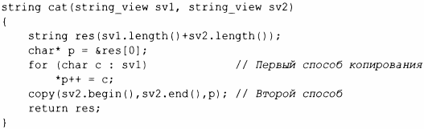
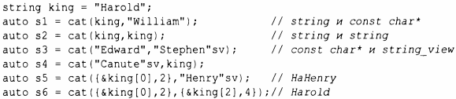
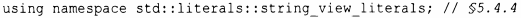
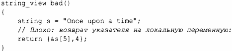

⇐9.2.1 Реализация string 9.4 Регулярные выражения⇒
Наиболее частое использование последовательности символов - это передача ее в некоторую функцию для чтения. Это может быть сделано путем передачи строки string по значению, по ссылке или с помощью строки в стиле С. Во многих системах существуют дополнительные альтернативы, такие как строковые типы, не предлагаемые стандартом. Во всех этих случаях при попытке передачи подстроки возникают дополнительные сложности. Чтобы решить эту проблему, стандартная библиотека предлагает класс string_view; который, по сути, содержит пару (указатель, длина), описывающую последовательность символов.
string view предоставляет доступ к непрерывной последовательности символов. Символы могут быть сохранены многими возможными способами, в том числе в объекте string и в строке в стиле С. string_view похож на указатель или ссылку, не владеющую символами, на которые указывает. В этом он напоминает пару итераторов STL (§12.3).
Рассмотрим простую функцию конкатенации двух строк:
Эта функция может быть использована следующим образом:
Данная функция са t () имеет три преимущества перед функцией cornpose (), которая получает аргументы const string& (§9.2):
Обратите внимание на суффикс sv ("string view"). Чтобы его применять, нужно использовать соответствующее пространство имен:
Зачем об этом беспокоиться? Дело в том, что, когда мы передаем "Edward", нам нужно построить string_view из const char*, что требует подсчета символов. Для "Stephen" sv эта длина вычисляется во время компиляции.
При возврате string_view помните, что этот тип очень похож на указатель и должен на что-то указывать:
Мы возвращаем указатель на символы строки string, которая будет уничтожена до того, как мы сможем ее использовать.
Одно существенное ограничение string_view заключается в том, что это представление предназначено только для чтения символов. Например, вы не можете использовать string_view для передачи символов функции, которая изменяет свой аргумент на нижний регистр. Для этого вы можете воспользоваться gsl::span или gsl::string_span (§ 13.3).
Поведение при обращении к символам за рамками диапазона string_view не определено. Если вы хотите гарантированную проверку выхода за диапазон, используйте функцию-член а t () , которая генерирует исключение out_оf_range при попытке доступа за пределами диапазона, используйте gsl::string_span (§ 13.3) или "просто будьте внимательны".